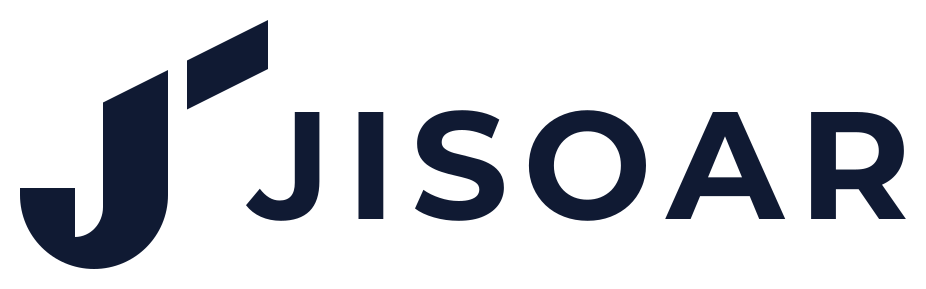
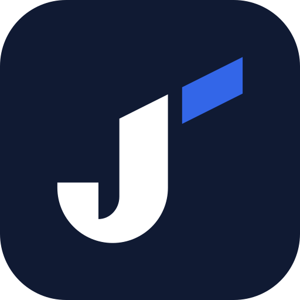
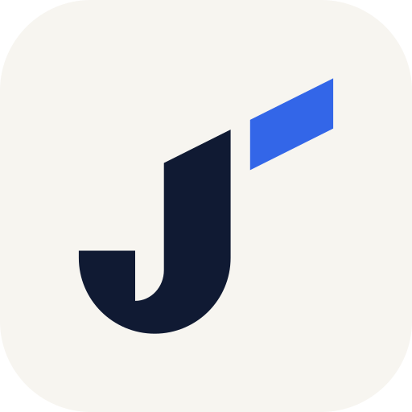

JISOAR 로고 정본 (H01 원본 · Montserrat Bold)
색 Night #101A33 · Sky #3366E8 · 바탕 Dawn Paper #F7F5F0. 심볼 규칙: 파란 막대 윗변 = J 윗면 사선(기울기 1:2)의 연장선.
jisoar-logo.svg · 기본 로고 (밝은 바탕)
jisoar-logo-dark.svg · 어두운 바탕용 (투명 배경)
jisoar-logo-navy.svg · 단색 남색 (도장·팩스·1도 인쇄)
jisoar-logo-white.svg · 단색 흰색 (사진 위)jisoar-symbol.svg · 심볼만jisoar-symbol-white.svg · 심볼만, 어두운 바탕용jisoar-wordmark.svg · 글자만
jisoar-icon-night.svg · 앱 아이콘 (남색)
jisoar-icon-paper.svg · 앱 아이콘 (밝은)favicon.svg · 파비콘 (16~32px용, 막대 틈 넓힘)